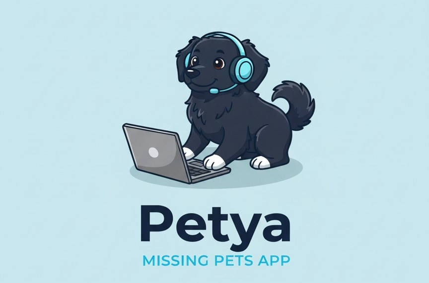

Petya te ayuda a encontrar a tu mascota

Imagina una app que pone a tu servicio toda la tecnología disponible para apoyarte en el búsqueda de tu mascota
Si tu mascota se pierde, Petyapp te ayuda a encontrarla rápidamente mediante notificaciones a usuarios cercanos y herramientas de geolocalización.
Si encuentras una mascota perdida, Petyapp te facilita reportarlo y contactar con su dueño.
¿Cómo funciona?
- Regístrate en la app y crea un perfil para tu mascota con su foto y detalles importantes.
- Si tu mascota se pierde, reporta la pérdida en la app. Se enviarán notificaciones a usuarios cercanos.
- Si encuentras una mascota perdida, usa la app para reportarla y contactar con su dueño.
Características principales
- Notificaciones geolocalizadas para usuarios cercanos.
- Perfil detallado de mascotas con fotos y características.
- Interfaz fácil de usar para reportar pérdidas y hallazgos.